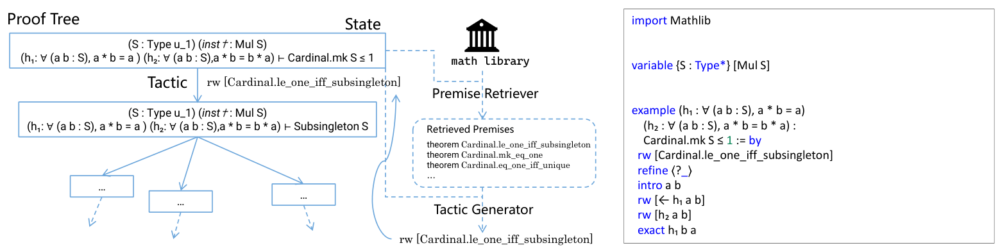

Survey of AI for mathematics that reviews Lean-based formalization, autoformalization, agentic provers, and Mathlib retrieval tools such as LeanSearch.
Abstract
AI for Mathematics (AI4Math) has emerged as a distinct field that leverages machine learning to navigate mathematical landscapes historically intractable for early symbolic systems. While mid-20th-century symbolic approaches successfully automated formal logic, they faced severe scalability limitations due to the combinatorial explosion of the search space. The recent integration of data-driven approaches has revitalized this pursuit. In this review, we provide a systematic overview of AI4Math, highlighting its primary focus on developing AI models to support mathematical research. Crucially, we emphasize that this is not merely the application of AI to mathematical activities; it also encompasses the development of stronger AI systems where the rigorous nature of mathematics serves as a premier testbed for advancing general reasoning capabilities. We categorize existing research into two complementary directions: problem-specific modeling, involving the design of specialized architectures for distinct mathematical tasks, and general-purpose modeling, focusing on foundation models capable of broader reasoning, retrieval, and exploratory workflows. We conclude by discussing key challenges and prospects, advocating for AI systems that go beyond facilitating formal correctness to enabling the discovery of meaningful results and unified theories, recognizing that the true value of a proof lies in the insights and tools it offers to the broader mathematical landscape.
Problem
AI for Mathematics has grown quickly, using machine learning to get past the combinatorial explosion that limited early symbolic theorem provers. A systematic overview is needed of how AI models can support mathematical research, and of how mathematics can serve as a testbed for reasoning.
Approach
The review sorts existing work into two directions. Problem-specific modeling covers pattern discovery to guide intuition, construction of examples and counterexamples, and formal reasoning in closed systems. General-purpose modeling covers natural-language reasoning with LLMs, formal reasoning with proof assistants (notably Lean and Mathlib), autoformalization, agents such as Numina-Lean-Agent and Aristotle, and mathematical retrieval such as LeanSearch. It also evaluates machine-generated solutions on PKU undergraduate final exams and PhD qualifying exams using a 0–5 grading rubric.

Figure 3: Example of a proof step generation method and the complete proof it produces. Left: An illustration of a proof tree, where each node represents a proof state and each edge corresponds to a tactic. Applying an appropriate tactic transforms the current proof state into the next one. At each step, the proof step generation method retrieves relevant premises and proposes several candidate ta
Results
The review identifies key challenges: reliance on domain expertise, the verification bottleneck, and the gap between formal and natural-language reasoning in LLMs. It argues for AI systems that aim at meaningful discovery and unified theories, beyond formal correctness.